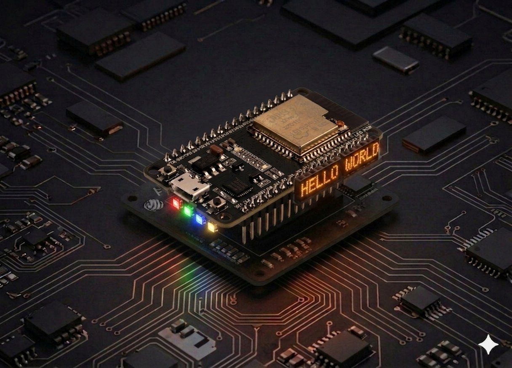

RGB LED
Drive an RGB LED with three PWM channels on the ESP32 — fading between colors and arbitrary (R, G, B) mixing in MicroPython.
RGB LED¶
An RGB LED packs three LEDs (red, green, blue) in a single body. On the ESP32 we drive each channel with PWM and can produce nearly any color in the visible spectrum. The code runs in MicroPython.

Description¶
The ESP32 has a built-in LED PWM controller that gives you up to 16 independent channels. For an RGB LED we use 3 — one per color. Sweeping the duty cycle between 0 and 1023 produces a continuous brightness perception, exactly like analogWrite on Arduino, except here the default resolution is 10-bit (0–1023) instead of 8-bit (0–255).
Components¶
| Component | Quantity |
|---|---|
| ESP32 board (DevKit V1 or similar) | 1 |
| RGB LED (common cathode) | 1 |
| 220 Ω resistor | 3 |
| Breadboard | 1 |
| M-M jumper wires | 4 |
How it works¶
An RGB LED has 4 legs:
- 3 anodes (+): red, green, blue — one per color.
- 1 common cathode (−) — the longest leg, goes to GND.
Each anode needs its own 220 Ω resistor to limit current.
PWM on the ESP32¶
Unlike Arduino UNO (where only pins marked ~ can do PWM), on the ESP32 almost any GPIO can be a PWM pin — the internal controller assigns a hardware channel automatically. In MicroPython:
from machine import Pin, PWM
ch = PWM(Pin(25), freq=1000, duty=512) # 50% brightness
ch.duty(0) # off
ch.duty(1023) # max
Common (R, G, B) combos (at 1023 resolution):
(1023, 0, 0)→ pure red(0, 1023, 0)→ pure green(1023, 1023, 0)→ yellow(1023, 1023, 1023)→ white(512, 0, 1023)→ purple
Wiring¶
We use GPIO 25, 26, 27 — free on any DevKit V1 and PWM-capable with no conflicts.
| RGB LED pin | ESP32 |
|---|---|
| R (red) | GPIO 25 (through 220 Ω) |
| G (green) | GPIO 26 (through 220 Ω) |
| B (blue) | GPIO 27 (through 220 Ω) |
| Common cathode (−) | GND |
ESP32 RGB LED (common cathode)
GPIO 25 ──[220Ω]──── R
GPIO 26 ──[220Ω]──── G
GPIO 27 ──[220Ω]──── B
GND ─────────── Cathode (−, longest leg)
Pins to avoid
GPIO 6–11 are wired to the internal SPI flash — never connect anything there. GPIO 34–39 are input-only, no PWM. GPIO 0, 2, 12, 15 have boot-strap roles — they can work but may block boot if the LED pulls too much current.
Code¶
from machine import Pin, PWM
import time
# --- Setup ---
# PWM pins for the three RGB channels
red = PWM(Pin(25), freq=1000, duty=0)
green = PWM(Pin(26), freq=1000, duty=0)
blue = PWM(Pin(27), freq=1000, duty=0)
DELAY_MS = 10 # fade speed
def set_color(r, g, b):
"""Set the LED color. Values 0-1023."""
red.duty(r)
green.duty(g)
blue.duty(b)
def fade(from_color, to_color, steps=255, delay_ms=DELAY_MS):
"""Smooth transition between two colors (R, G, B tuples)."""
fr, fg, fb = from_color
tr, tg, tb = to_color
for i in range(steps + 1):
r = fr + (tr - fr) * i // steps
g = fg + (tg - fg) * i // steps
b = fb + (tb - fb) * i // steps
set_color(r, g, b)
time.sleep_ms(delay_ms)
RED = (1023, 0, 0)
GREEN = (0, 1023, 0)
BLUE = (0, 0, 1023)
OFF = (0, 0, 0)
try:
while True:
fade(RED, GREEN)
fade(GREEN, BLUE)
fade(BLUE, RED)
except KeyboardInterrupt:
# On stop, turn the LED off so it doesn't stay lit
set_color(0, 0, 0)
red.deinit()
green.deinit()
blue.deinit()
Run the script¶
- Plug the ESP32 into USB and open Thonny.
- Paste the code above and save it as
main.pyon the MicroPython device (so it runs automatically on every boot). - Press Run (F5). The LED should slowly cycle through red → green → blue → red, each transition taking ~2.5 seconds.
If the LED doesn't react, see Troubleshooting.
Example: single fixed color¶
from machine import Pin, PWM
red = PWM(Pin(25), freq=1000)
green = PWM(Pin(26), freq=1000)
blue = PWM(Pin(27), freq=1000)
# Pale purple (R=200, G=0, B=512)
red.duty(200)
green.duty(0)
blue.duty(512)
Example: random color every second¶
from machine import Pin, PWM
import random
import time
channels = [PWM(Pin(p), freq=1000) for p in (25, 26, 27)]
while True:
for ch in channels:
ch.duty(random.randint(0, 1023))
time.sleep(1)
Troubleshooting¶
LED doesn't light up at all
- Check the common cathode — the longest leg must go to GND.
- Confirm a 220 Ω resistor on each anode — without them the LED can burn out or, on marginal power, never light up.
- Try another USB cable — some "power only" cables don't deliver enough current.
One color is much brighter than the others
- That's normal — red LEDs run at ~1.8 V while green/blue need 3.0–3.2 V; at the same resistor value, red appears brighter. Compensate in software:
red.duty(int(value * 0.6)).
I bought a common-anode LED
- Flip the logic:
0means full on,1023means off. Replaceset_color: - Wire the longest leg to 3.3 V instead of GND.
OSError: invalid pin on PWM(Pin(...))
- The chosen pin doesn't support PWM (e.g. GPIO 34–39 are input-only). Pick other pins — recommended: 25, 26, 27, 32, 33.
Extension ideas¶
- Button to switch modes: a button on GPIO 32 cycles between "solid", "RGB fade", "random".
- Potentiometer control: three pots on ADC1 (GPIO 36, 39, 34) drive each channel manually.
- DHT22 mood light: color reflects the temperature (blue < 20 °C, green 20–25 °C, red > 25 °C) — combine with the DHT22 project.
- Wireless sync: send the color value with ESP-NOW — one master board drives many RGB LEDs at the same time.